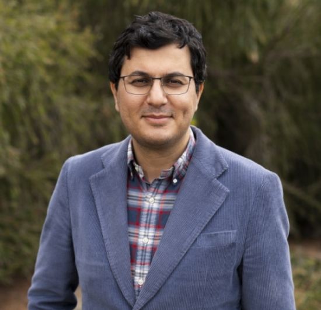

Contact: mlesani AT ucsc.edu
I have positions for motivated students. I will be glad to hear about
your interests and accomplishments.
I am an associate professor at the Computer Science and Engineering
Department of the University of California, Santa Cruz. I was a postdoc
at MIT, obtained my PhD from UCLA, my MS in artificial intelligence from
Sharif University of Technology and my BS in software engineering from
University of Tehran. My research interests are reliability and security
of software systems especially concurrent and distributed systems. Our
recent focus is on secure replicated systems and distributed machine
learning. I received the NSF CAREER award in 2020 and DARPA YFA award in
2022. My research has been recognized as SIGPLAN Research Highlight in
2019, received the distinguished paper award at OOPSLA 2018 and has been
supported by multiple NSF grants.
Projects
Here are some of our current and past projects:
- Resilient distributed systems
Given resiliency requirements for an online service (confidentiality,
integrity and availability policies), how can we automatically
partition, place and replicate it to ensure resiliency?
S&P’22
- Heterogeneous and reconfigurable distributed
systems
How can we replicate online services on untrusted, heterogeneous, and
dynamic hosts? DISC’23, DISC’24, ICDE’25
- Automatic analysis and synthesis of replicated
objects
Given a data type or a database and its integrity properties, how can we
automatically decide the optimum hybrid consistency, and synthesize a
custom replicated store that guarantees convergence and integrity? How
can we accelerate hybrid consistency on message passing, RDMA and FPGA
networks?
POPL’19, CAV’20, PLDI’22, OOPSLA’25
- Verification of distributed systems
How can we modularly build a certified stack of distributed
components?
POPL’16, ICFP’20
- Data analytics
Given high-level analytics queries in domain specific languages, how can
we automatically optimize and synthesize efficient parallel and
distributed workflows?
ICFP’21
- Blockchain transactions
How can we securely and efficiently execute transactions across multiple
blockchains?
ICBC’20, PODC’21, CSF’23
- Machine learning for performance models
Can we learn performance characteristics of data structures and leverage
it to synthesize efficient data structures?
MAPL’20
- Domain-specific languages and type systems
Can the safety guarantees of type systems carry over to safety of
lab-on-a-chip assays?
OOPSLA’18, CACM’21
- Automatic fence insertion for concurrent
systems
Given high-level ordering requirements, can we optimize and automate the
subtle task of fence placement for concurrent data structures?
OOPSLA’15, PODC’17, DISC’19
- Concurrency programming models, testing and
verification
How can we design and implement intuitive, efficient and correct
concurrent programming models, and data structures?
PPoPP’11, CONCUR’12, DISC’13, DISC’14, CAV’14, NFM’19, OOPSLA’22
Papers
- Hambazi: Spatial Coordination Synthesis for Augmented Reality
OOPSLA ’25 (ACM SIGPLAN conference on Object-oriented Programming,
Systems, Languages, and Applications)
Yi-Zhen Tsai, Jiasi Chen, Mohsen Lesani
Paper, BibTex, More
- Hamava: Fault-tolerant Reconfigurable Geo-Replication on
Heterogeneous Clusters
ICDE ’25 (IEEE International Conference on Data Engineering)
Tejas Mane, Xiao Li, Mohammad Sadoghi, Mohsen Lesani
Paper, BibTex, More
- TensorRight: Automated Verification of Tensor Graph Rewrites
POPL ’25 (ACM SIGPLAN Symposium on Principles of Programming
Languages)
J. Arora, S. Lu, D. Jain, T. Xu, F Houshmand, P. M. Phothilimthana, M.
Lesani, P. Narayanan, K. S. Murthy, R. Bodik, A. Sabne, C Mendis
Paper, BibTex
- BA: Reconfigurable Heterogeneous Quorum Systems (short paper)
DISC ’24 (The International Symposium on Distributed Computing)
Xiao Li, Mohsen Lesani
Paper, More
- Vulnerability Flow Type Systems
LangSec ’24 (Language-theoretic Security and Applications Workshop at
the IEEE Security & Privacy Symposium 2024)
Mohsen Lesani
Paper, More
- Quorum Subsumption for Heterogeneous Quorum Systems
DISC ’23 (The International Symposium on Distributed Computing)
Xiao Li, Eric Chan, Mohsen Lesani
Paper, More
- Cross-chain Swaps with Preferences
CSF ’23 (IEEE Computer Security Foundations Symposium)
Eric Chan, Marek Chrobak, Mohsen Lesani
Paper, More
- Hamband: RDMA Replicated Data Types
PLDI ’22 (ACM SIGPLAN Conference on Programming Language Design and
Implementation)
Farzin Houshmand, Javad Saberlatibari, Mohsen Lesani
Paper, More
- C4: Verified Transactional Objects
OOPSLA ’22 (ACM SIGPLAN conference on Object-oriented Programming,
Systems, Languages, and Applications)
M. Lesani, L. Xia, A. Kaseorg, C. Bell, A. Chlipala, B. Pierce, S.
Zdancewic
Paper, More
- Hamraz: Resilient Partitioning and Replication
S&P ’22 (IEEE Symposium on Security and Privacy)
Xiao Li, Farzin Houshmand, Mohsen Lesani
Paper, More
- Grafs: Declarative Graph Analytics
ICFP ’21 (ACM SIGPLAN International Conference on Functional
Programming)
Farzin Houshmand, Mohsen Lesani, Keval Vora
Paper, More
- Brief Announcement: Brokering with Hashed Timelock Contracts is
NP-Hard
PODC ’21 (ACM Symposium on Principles of Distributed Computing)
Eric Chan, Mohsen Lesani
Paper, More
- BioScript: programming safe chemistry on
laboratories-on-a-chip
CACM ’21 (Communications of the ACM 64, 2, February 2021) Jason Ott,
Tyson Loveless, Chris Curtis, Mohsen Lesani, and Philip Brisk.
2021.
Paper
- TLC: Temporal Logic of Distributed Components
ICFP ’20 (ACM SIGPLAN International Conference on Functional
Programming)
Jeremiah Griffin, Mohsen Lesani, Narges Shadab, Xizhe Yin
Paper, More
- Hampa: Solver-aided Recency-Aware Replication
CAV ’20 (International Conference on Computer-Aided Verification)
Xiao Li, Farzin Houshmand, Mohsen Lesani
Paper, More
- UBITect: A Precise and Scalable Method to Detect
Use-Before-Initialization bugs in Linux Kernel
ESEC/FSE ’20 (The ACM Joint European Software Engineering Conference and
Symposium on the Foundations of Software Engineering)
Y. Zhai, Y. Hao, H. Zhang, D. Wang, C. Song, Z. Qian, M. Lesani, S.
Krishnamurthy, P. Yu
Paper, More
- Cross-Chain Transactions
ICBC ’20 (IEEE International Conference on Blockchain and
Cryptocurrency)
Narges Shadab, Farzin Houshmand, Mohsen Lesani
Paper, More
- Learning Quantitative Representation Synthesis
MAPL ’20 (ACM SIGPLAN Machine Learning and Programming Languages
Workshop)
Mayur Patil, Farzin Houshmand, Mohsen Lesani
Paper, More
- Hamsaz: Replication Coordination Analysis and Synthesis
POPL ’19 (ACM SIGPLAN Symposium on Principles of Programming
Languages)
Farzin Houshmand, Mohsen Lesani
Paper, More
- Polynomial-time Fence Insertion For Structured Programs
DISC ’19 (The International Symposium on Distributed Computing)
Mohammad Taheri, Arash Pourdamghani, Mohsen Lesani
Paper, More
- Transaction Protocol Verification with Labeled Synchronization
Logic
NFM ’19 (NASA Formal Methods Symposium)
Mohsen Lesani
Paper, More
- BioScript: Programming Safe Chemistry of
Laboratories-on-a-Chip
OOPSLA ’18 (ACM SIGPLAN conference on Object-oriented Programming,
Systems, Languages, and Applications)
Distinguished paper award
SIGPLAN Research Highlight 2019
Invited to Communications of ACM
Jason Ott, Chris Curtis, Tyson Loveless, Mohsen Lesani, Philip
Brisk
Paper, More
- Brief Announcement: Fence Insertion for Straight-line Programs is in
P
PODC ’17 (ACM Symposium on Principles of Distributed Computing)
Mohsen Lesani
Paper, More
- Chapar: Certified Causally Consistent Distributed Key-Value
Stores
POPL ’16 (ACM SIGPLAN Symposium on Principles of Programming
Languages)
Mohsen Lesani, Christian J. Bell, Adam Chlipala
Paper, More
- Declarative Fence Insertion
OOPSLA ’15 (ACM SIGPLAN conference on Object-oriented Programming,
Systems, Languages, and Applications)
John Bender, Mohsen Lesani, Jens Palsberg
Paper, More
- AtomChase: Directed Search towards Atomicity Violations
ISSRE ’15 (IEEE International Symposium on Software Reliability
Engineering)
Mahdi Eslamimehr, Mohsen Lesani
Best paper award
More
- Decomposing Opacity
DISC ’14 (International Symposium on DIStributed Computing), WTTM
’13
Mohsen Lesani, Jens Palsberg
Paper, More
- Automatic Atomicity Verification for Clients of Concurrent Data
Structures
CAV ’14 (International Conference on Computer Aided Verification)
Mohsen Lesani, Todd Millstein, Jens Palsberg
Paper, More
- On the Correctness of Transactional Memory Algorithms
PhD Dissertation
Mohsen Lesani
Dissertation, More
- MrCrypt: Static Analysis for Secure Cloud Computations
OOPSLA ’13 (ACM SIGPLAN conference on Object-oriented Programming,
Systems, Languages, and Applications)
Sai Deep Tetali, Mohsen Lesani, Rupak Majumdar, Todd Millstein
Paper, More
- Proving Non-opacity
DISC ’13 (International Symposium on DIStributed Computing),
Transact’13
Mohsen Lesani, Jens Palsberg
Paper, More
- A Framework for Formally Verifying Software Transactional Memory
Algorithms
CONCUR ’12 (International Conference on Concurrency Theory)
Mohsen Lesani, Victor Luchangco, Mark Moir
Paper, More
- Communicating Memory Transactions
PPoPP ’11 (ACM Principles and Practice of Parallel Programming)
Mohsen Lesani, Jens Palsberg
Paper
- Semantics-preserving Sharing Actors
AGERE ’13 (ACM Workshop on Programming based on Actors, Agents, and
Decentralized Control)
Mohsen Lesani, Antonio Lain
Paper, More
- Specifying Transactional Memories with Nontransactional
Operations
WTTM ’13 (Workshop on the Theory of Transactional Memory)
Mohsen Lesani, Victor Luchangco, Mark Moir
Paper
- Putting Opacity in its Place
WTTM ’12 (Workshop on the Theory of Transactional Memory)
Mohsen Lesani, Victor Luchangco, Mark Moir
Paper
- Fuzzy Trust Aggregation And Personalized Trust Inference In Virtual
Social Networks
Journal of Computational Intelligence 25/2, 2009
Mohsen Lesani, Niloufar Montazeri
Paper
- Aria Language, Towards Agent Orientation Paradigm
ICSOFT ’08 (International Joint conference on Software
Technologies)
Mohsen Lesani, Niloufar Montazeri
Paper
- Successful Cooperation between Heterogeneous Fuzzy Q-Learning
Agents
SMC ’04 (IEEE International Conference on Systems, Man, and
Cybernetics)
Ali Akhavan Bitaghsir, Amir Moghimi, Mohsen Lesani, Mohammad Mehdi
Keramati, Majid Nili Ahmadabadi, Babak Nadjar Arabi
Paper
The rest of papers
Teaching
Service
- OOPSLA ’26, PC (ACM SIGPLAN
Conference on Object-oriented Programming, Systems, Languages, and
Applications, Program Committee)
- CSF ’25, general
co-chair (IEEE Computer Security Foundations Symposium)
- PODC ’25, PC (The ACM
Symposium on Principles of Distributed Computing, Program
Committee)
- PLDI ’25, PC (ACM SIGPLAN
Conference on Programming Language Design and Implementation, Program
Committee)
- DISC ’24,
PC (The International Symposium on DIStributed Computing, Program
Committee)
- CCS ’24,
PC (ACM Conference on Computer and Communications Security, Program
Committee)
- S&P
’24, OC (IEEE Symposium on Security and Privacy, Organizing
Committee, Short Talks Chair)
- ASIACCS ’24, PC (ACM
ASIA Conference on Computer and Communications Security, Program
Committee), round 1
- PLDI ’23, PC (ACM SIGPLAN
Conference on Programming Language Design and Implementation, Program
Committee)
- POPL ’23, PC
(ACM SIGPLAN Symposium on Principles of Programming Languages, Program
Committee)
- CCS ’22, OC (ACM
Conference on Computer and Communications Security, Organizing
Committee, Grant chair)
- AFT ’22, PC (ACM
conference on Advances in Financial Technologies, Program
Committee)
- OOPSLA ’21, PC (ACM SIGPLAN Conference on Object-oriented
Programming, Systems, Languages, and Applications, Program
Committee)
- OOPSLA ’20, PC (ACM SIGPLAN Conference on Object-oriented
Programming, Systems, Languages, and Applications, Program
Committee)
- DisCoTec ’20, PC (International Federated Conference on Distributed
Computing Techniques, Program Committee) POPL ’20, PC (ACM SIGPLAN
Symposium on Principles of Programming Languages, Program
Committee)
- ECOOP ’18, PC (European Conference on Object-Oriented Programming,
Program Committee)
- POPL ’17, ERC (ACM Principles of Programming Languages 2017,
External Review Committee)
- CPP ’17, PC (ACM Certified Programs and Proofs 2017, Program
Committee)
Team
We work together at the Safe and Secure Software (S3) lab.


- Tejas Mane, PhD student
- Primary publications: ICDE ’25
Other
- I am from the beautiful city of Kerman where the Prince’s Garden 1, 2 is located.
- My PhD
hooding at UCLA.
- I tried acting and played John J. Astor in Titanic the musical. Can
you find me in the cast?
- We won the best costume award in a Halloween party at MIT.
- I try to keep the positive
feedbacks that we get.
- The names of our papers.
{kind=link}
{kind=link}
{kind=link}
{kind=link}